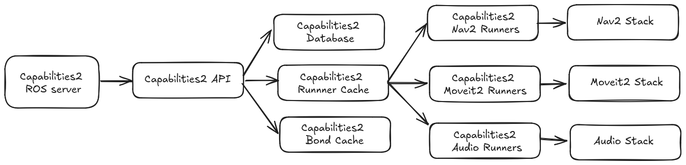

A reimplementation of the capabilities package. This package is implemented using C++ and extends the capabilities package features.
- capabilities2_server package contains the core of the system.
- capabilities2_runner package contains base and template classes for capability implementations.
System structure

Entities
The main usage of capabilities2 will typically involve creating or customizing capabilities through providers, interfaces and semantic interfaces. These are stored as YAML, and for more information about definitions and examples, click the links:
| Entity | Description |
|---|---|
| Interfaces | The main capability specification file |
| Providers | The capability provider specification file provides a mechanism to operate the capability |
| Semantic Interfaces | The semantic interface specification file provides a mechanism to redefine a capability with semantic information |
Runners can be created using the runner API parent classes here. The capabilities service can be started using the capabilities2_server package.
Setup Information
- Installation
- Setup Instructions with devcontainer
- Dependency installation for Foxglove-studio
Quick Startup information
Starting the Capabilities2 server
Additional Information
- Motivation and Example Use Cases
- Design Information
- Generated API and docs site
- Registering a capability
- Terminal based capability usage
- Running test scripts
Acknowledgements
This work is based on the capabilities package developed by the Open Source Robotics Foundation. github.com/osrf/capabilities.
Citation
If you use this work in an academic context, please cite the following publication(s):
Capabilities2 for ROS2: Advanced Skill-Based Control for Human-Robot Interaction